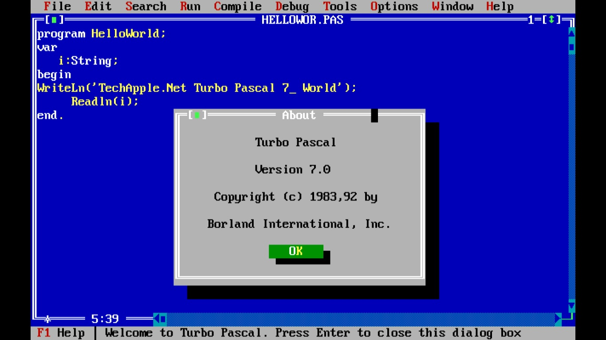
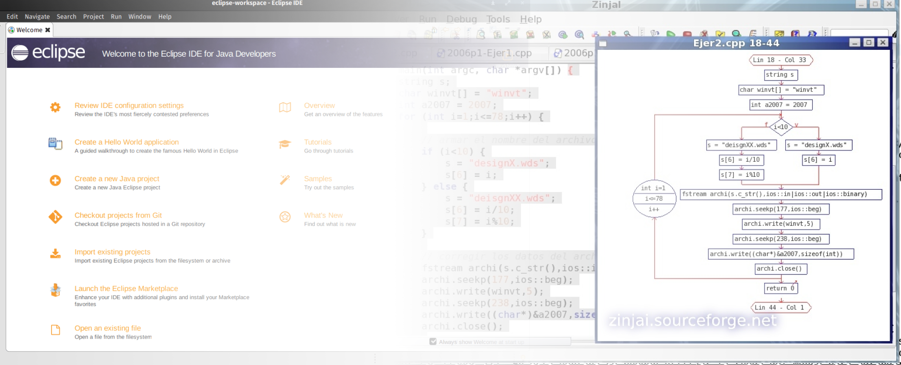
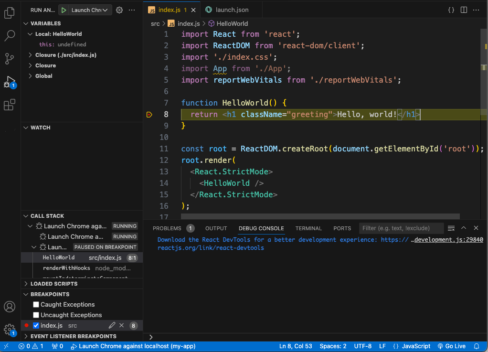

High School
During high school I discovered my interest in problem-solving, mathematics, and technology, laying the logical foundation for my software engineering journey.
I am a passionate web developer focused on building dynamic and interactive applications. I combine formal engineering principles with continuous self-directed learning to craft reliable software solutions.

During high school I discovered my interest in problem-solving, mathematics, and technology, laying the logical foundation for my software engineering journey.

Enrolled in Information Systems Engineering at UTN FRSF. Here I learned core computer science foundations, algorithms, data structures, database design, and software engineering methodologies.

To complement my academic background, I built a hands-on learning roadmap in modern full-stack web development. Through platforms like FreeCodeCamp, The Odin Project, and Udemy, I mastered HTML5, CSS3, JavaScript (ES6+), React, and Node.js.